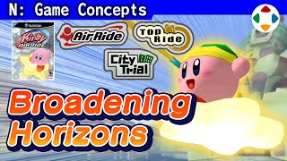
速览
2001 年 10 月卡比动画开播，略早于《大乱斗 DX》发售。当时他是卡比系列的统括导演，包括动画监修等各种工作，还要与 DX 收尾并行。动画需要配套的游戏阵容，而赛车游戏比一部正统动作游戏更快完成——正统系列另有《梦之泉 DX》、外包开发的《镜之大迷宫》和预定的 NGC 版（后中止）。游戏性方面，他首先假设「漂移很好玩」：现实中抓地跑法更快，但漂移有独特快感，因为它同样有风险与回报——失去控制、不能撞的墙在眼前展开，处理得好就爽快。要更好玩，光让漂移更快不够，于是在刹车开始漂移的同时蓄力，「吸住再一下子放开」。他还认为「追求顶点」的游戏不适合：缩短 1 秒是一种玩法，但他不往一点收敛，而往拓宽方向设计——尤其是城市试炼：在箱庭世界自由奔跑，享受不知会如何的强化与竞技场。还搭载了清单检查器，早于 PS3/Xbox 的成就系统：满足条件就能看到相邻格的条件，让随便玩的人也有达成感。本作与 N64 上中止的雪板风格《Air Ride》无关。统括时他尽量把能交的工作交给别人，但 Air Ride 的画面和声音几乎全由他直接监修。然而游戏本身迟迟不前：交出去一年多，连一台 Warp Star 都动不好。应主程序员的直接请求，他回任导演、全面重做，3 个半月完成——好在赛道和机体素材已有不少，团队也拼命跟上。成品中机体个性迥异，但其实都是同一规格，只有星型/机车型之分，其余全是参数差异——是把数值能做到的个性做到极致的结果，参数全由他亲自写。动画结束、Air Ride 完成后，他离开 HAL 成为自由人。
1. 为什么是赛车游戏 0:00
2001 年 10 月卡比动画开播，略早于《大乱斗 DX》。他作为卡比系列统括导演，做着包括动画监修在内的各种工作，还与 DX 收尾并行。
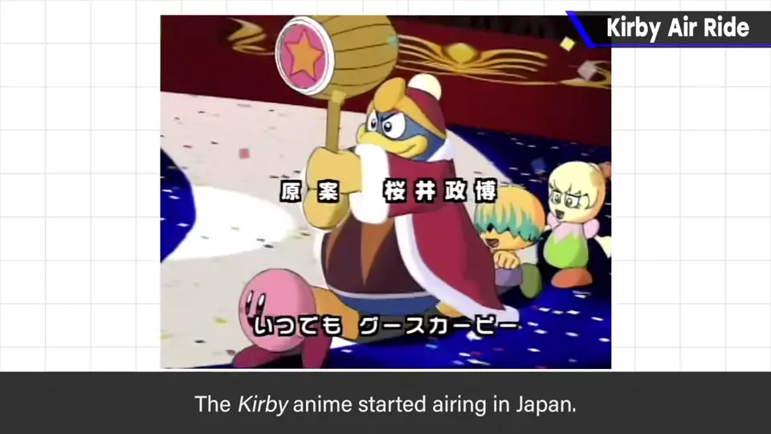
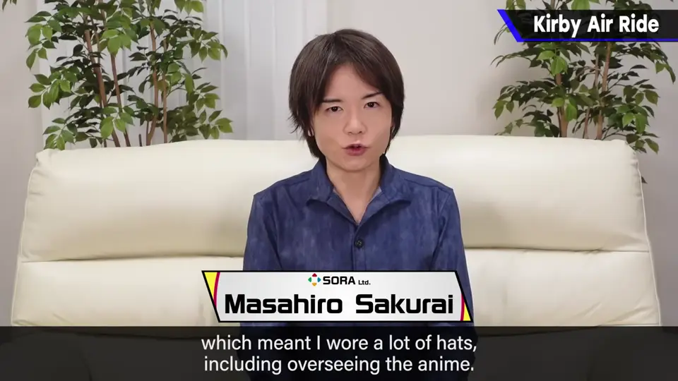
动画需要配套的游戏阵容；他判断赛车游戏比一部正统动作游戏更快完成。正统系列当时另有《梦之泉 DX》《镜之大迷宫》和 NGC 版（后中止）。
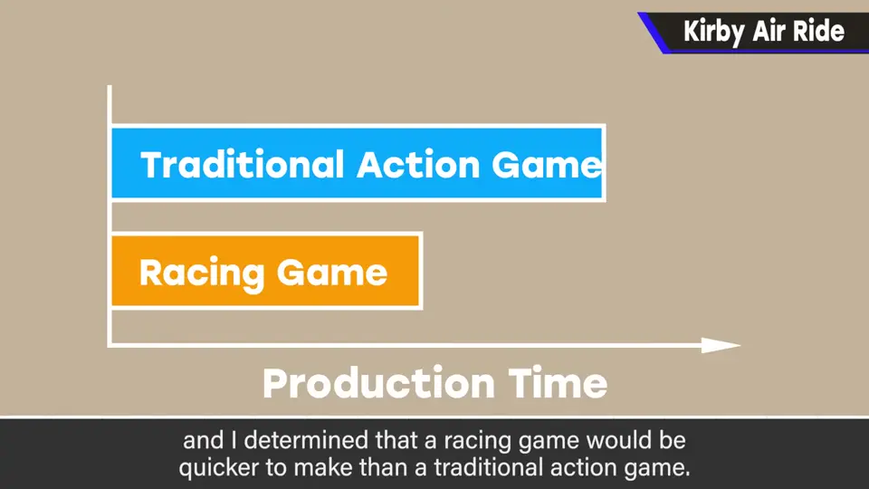
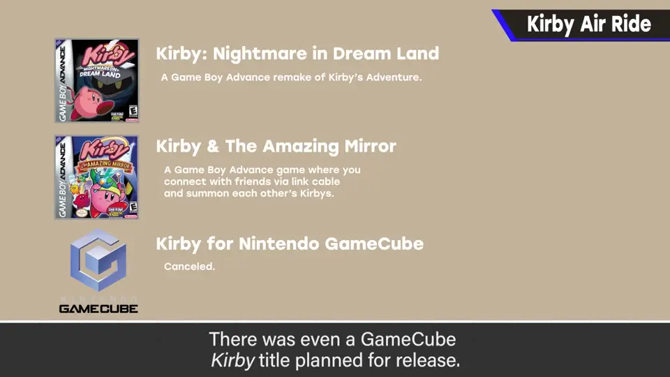
2. 漂移为什么好玩 1:28
他先假设「漂移很好玩」。现实中抓地跑法更快，但漂移有独特快感。
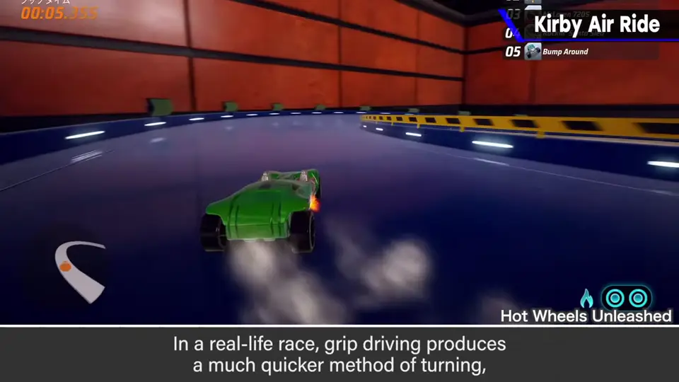
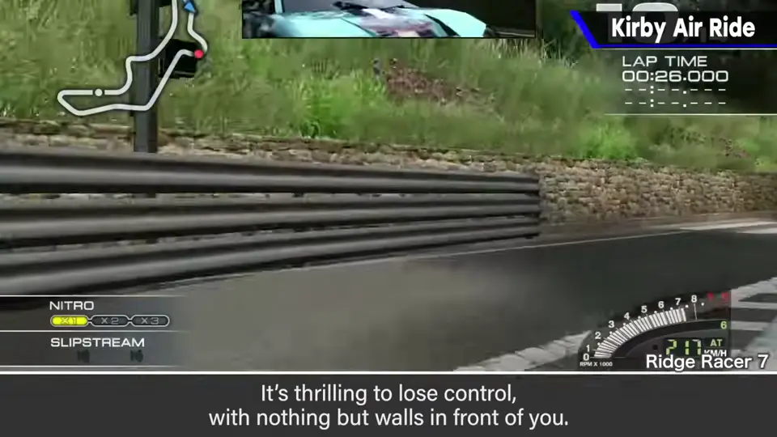
光让漂移更快还不够：在刹车开始漂移时同时蓄力，「吸住，再一下子放开」，让乐趣更进一步。
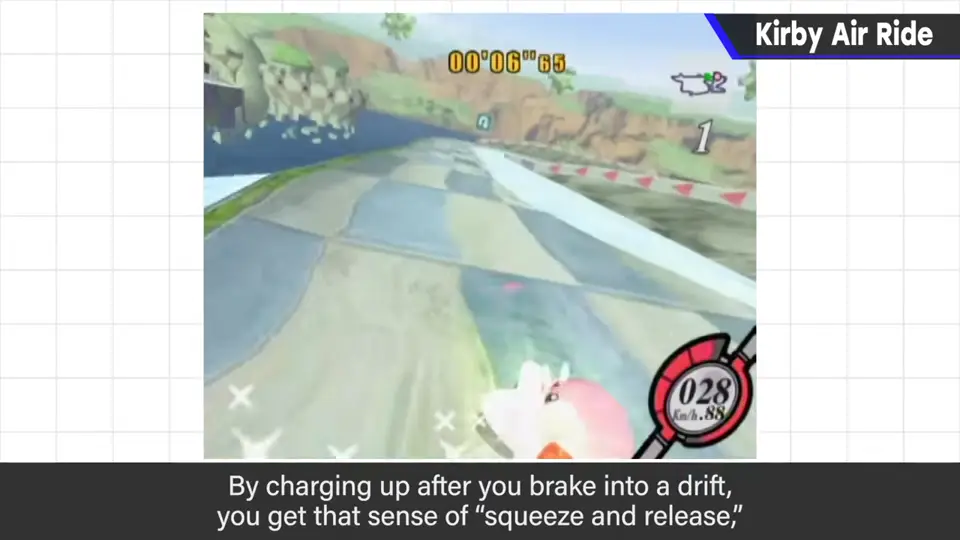
3. 不追求顶点，而是拓宽 2:16
缩短 1 秒也是一种玩法，但他认为「追求顶点」不适合，于是不往一点收敛，而往拓宽方向设计。
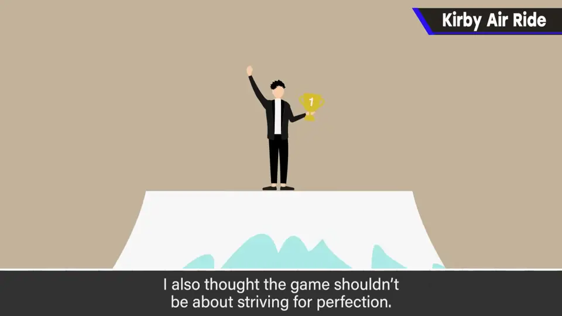
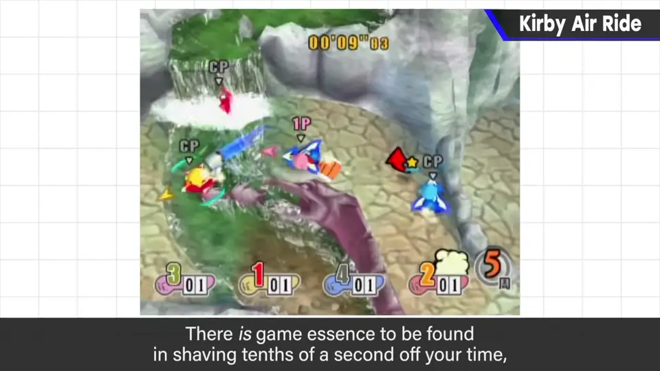
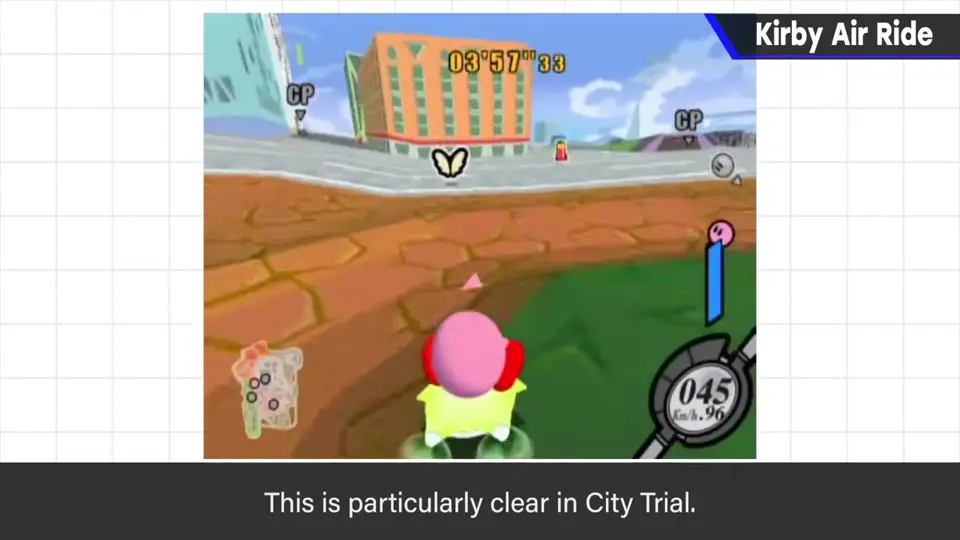
4. 清单检查器 2:46
早于 PS3/Xbox 的奖杯/成就系统。满足条件后，能看到相邻格子的达成条件，让随便玩的人也有达成感。
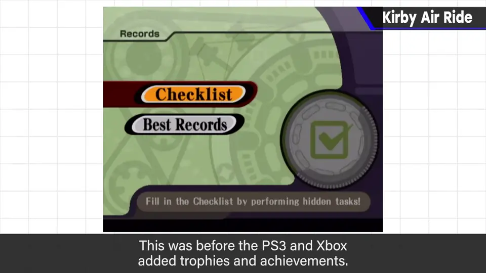
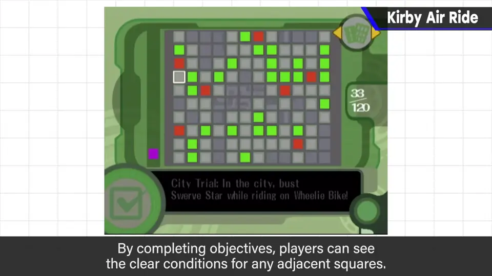
本作与 N64 上中止的《Air Ride》无关（那是雪板风格），但或许是「这样做也许可行」的灵感来源。
5. 停滞与全面重做 3:34
统括导演时他尽量放手，但 Air Ride 几乎全由他直接看，尤其画面和声音必须严格配合卡比世界观。
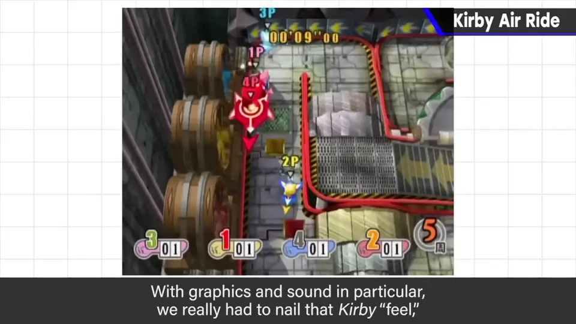
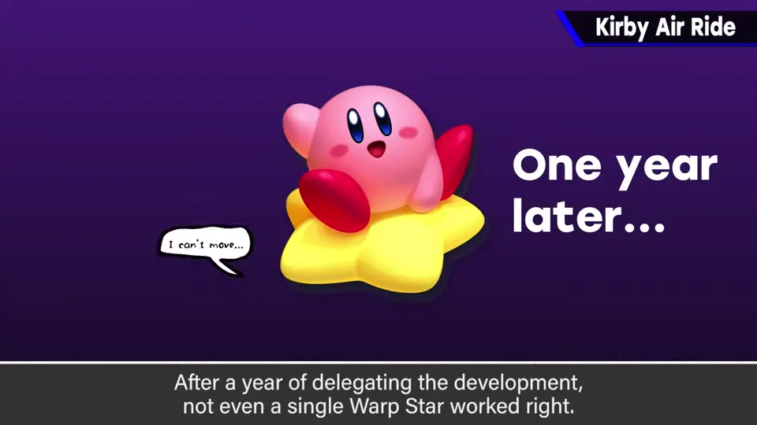
可游戏企划本身迟迟不进：交出去一年多，连一台 Warp Star 都动不好。
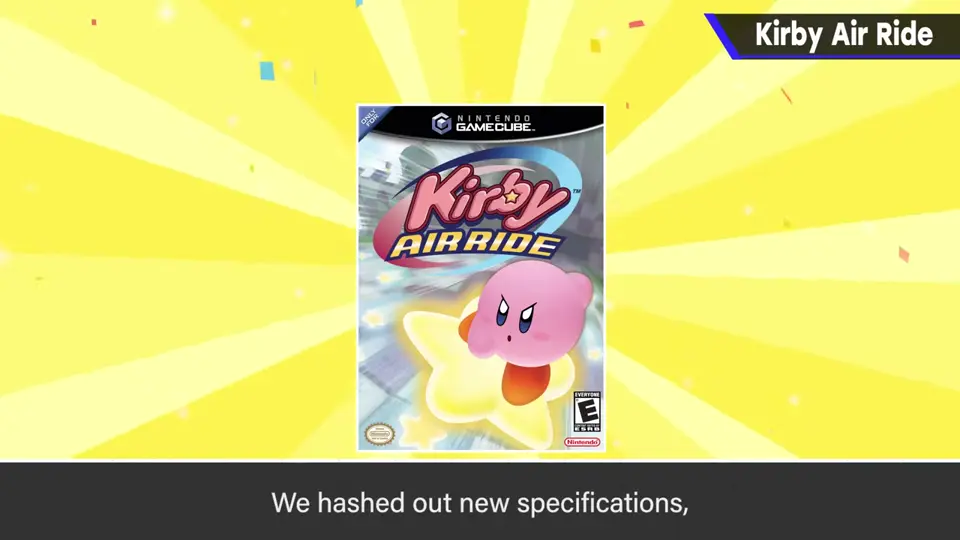
赛道、机体素材已基本完成；团队虽已疲惫，仍拼命跟上，才得以完成。
6. 机体其实都是同一规格 4:49
成品中机体个性迥异——不只是加速度高、易转弯，而是用法都不同。
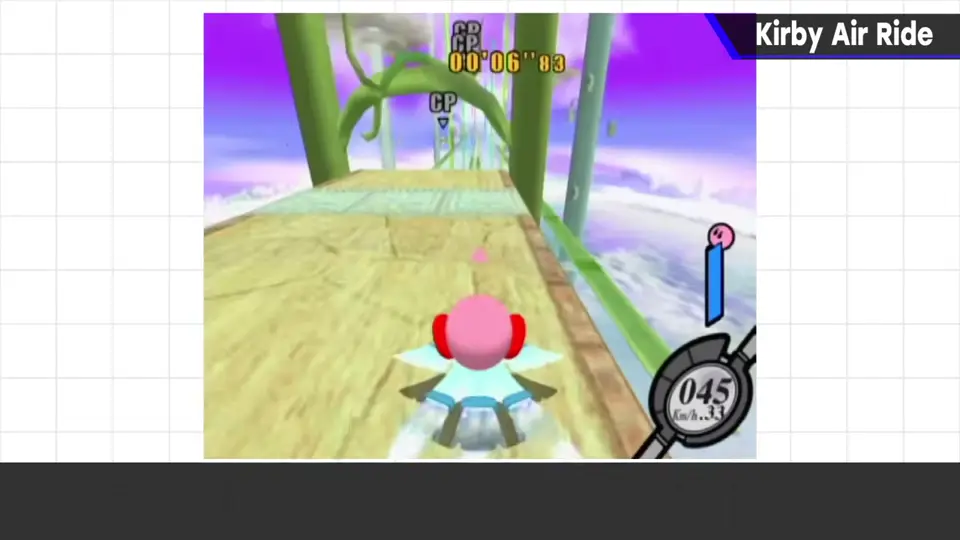
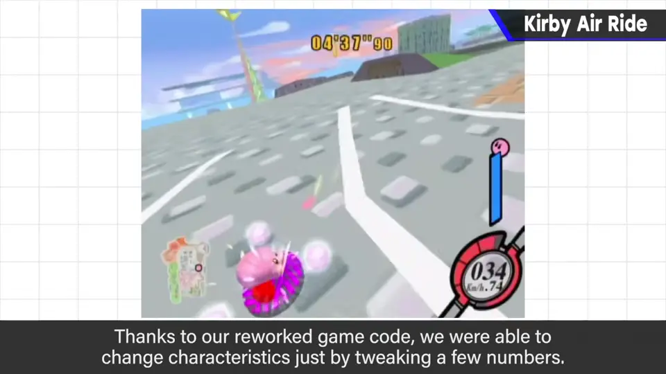
7. 结果与离开 HAL 5:21
Air Ride 至今人气很高，满载别处少见的游戏性。动画结束、作品完成后，他离开 HAL 成为自由人。
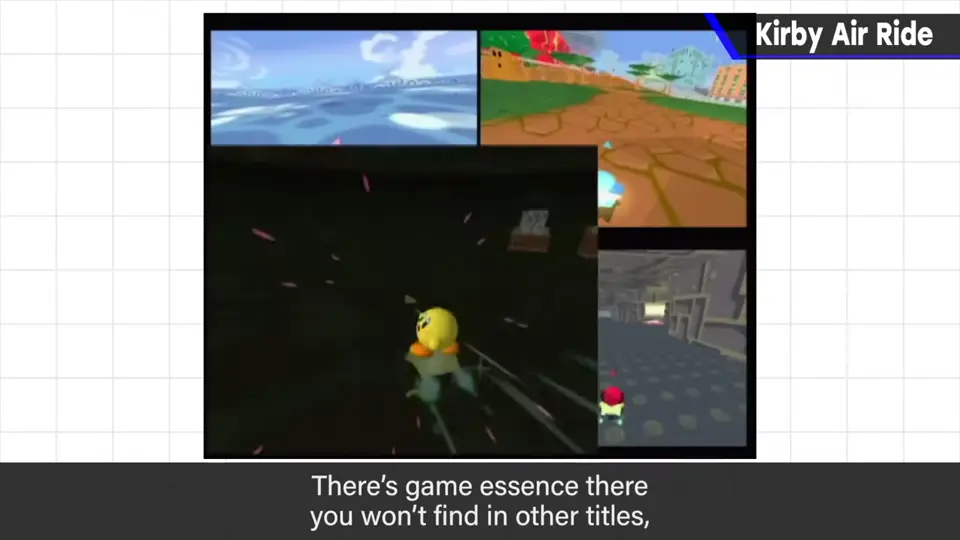
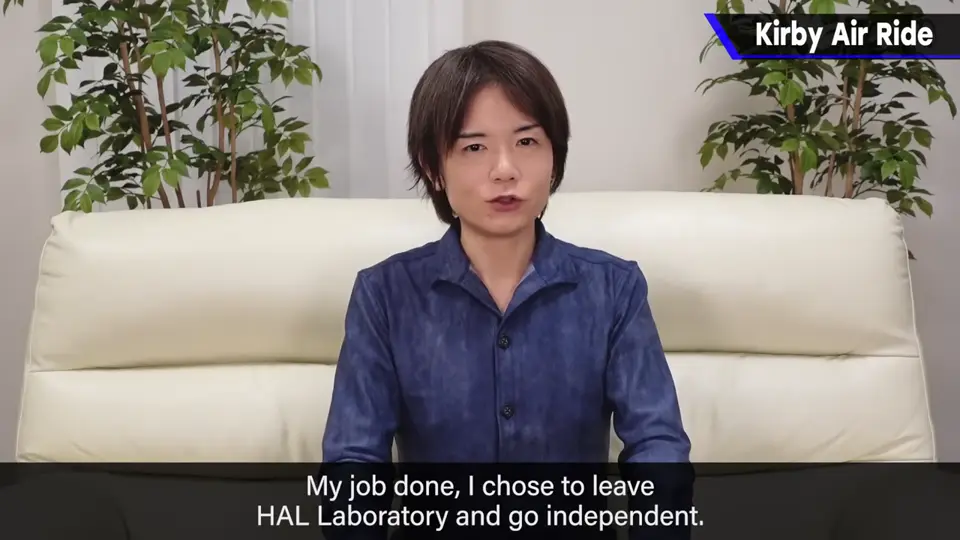
同期的《梦之泉 DX》《镜之大迷宫》不是他的导演作品，《镜之大迷宫》靠 Flagship 的力量完成。
自测题
1. 为什么卡比在这时做赛车游戏？
需要配合动画的游戏阵容，赛车比一部正统动作游戏更快完成。 0:56
2. 樱井如何让漂移更好玩？
在刹车开始漂移时同时蓄力，「吸住再放开」，而不只是让漂移更快。 2:08
3. 机体个性迥异的秘密是什么？
其实都是同一规格（仅星型/机车型之分），个性全靠参数差异。 5:04